Probabilistic Machine Learning
Home
Notebooks
Slides
1D Taylor approximation
Checking that two times jacobian is a hessian
Active Learning
Baseball
322 rows × 20 columns
Basic Imports
Basis Functions Regression
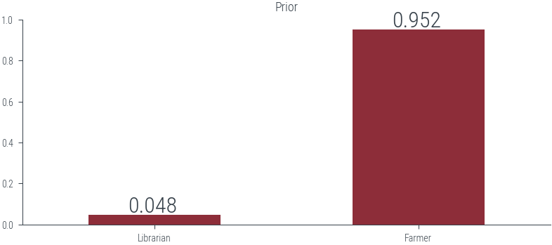
Bayes Librarian
BayesOpt Motivation
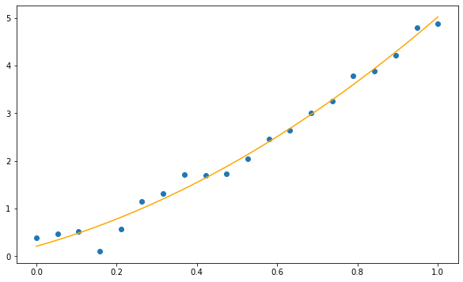
Bayesian Linear Regression
Bayesian Linear Regression Posterior Figures
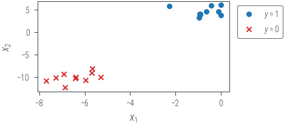
Bayesian Logistic Regression
Can we find closed form MLE solution for Bayesian Logistic Regression? It seems, yes. Stay tuned!
Bayesian Optimization
Biased and Unbiased Estimators
Biased and Unbiased Estimators
Jul 12, 2023
Nipun Batra
CIFAR10 and CIFAR100 dataset
https://www.cs.toronto.edu/~kriz/cifar.html
Calculus
If we are to directly call:
z.backward()
we get the following error.
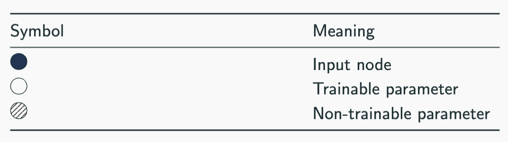
Capturing uncertainty in neural nets:
The model is the same as in case 1.1.1, but the noise is learned from the data.
Capturing uncertainty in neural nets:
The model is the same as in case 1.1.1, but the noise is learned from the data. Thus, we need to modify the loss function to include the noise parameter
\(\sigma\)
.
Capturing uncertainty in neural nets:
The model is the same as in case 1.1.1, but the noise is learned from the data.
Closed form solution for prior predictive distribution
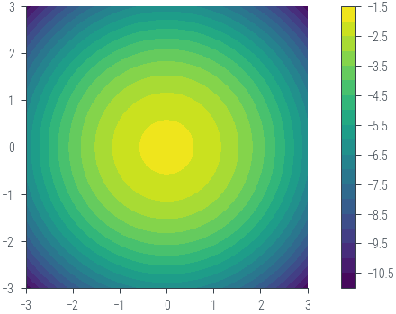
Closed form solution for prior predictive distribution
\[ I = \int p(\mathcal{D} \mid \theta) p(\theta) \mathrm{d}\theta \]
Computing the evidence term
\[ I = \int p(\mathcal{D} \mid \theta) p(\theta) \mathrm{d}\theta \]
Discrete distributions
The PDF of the Bernoulli distribution is given by
Error Code Dilbert
Gibbs Sampling for Bivariate Normal Distribution
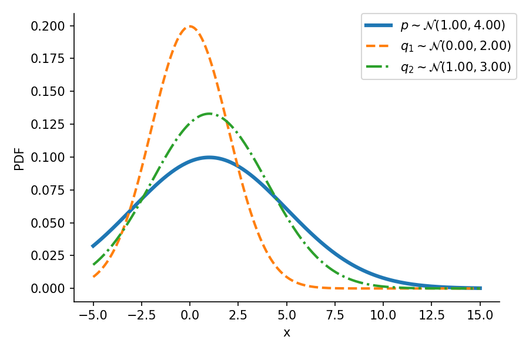
Goals:
Let us first look at G1. Look at the illustration below. We have a normal distribution
\(p\)
and two other normal distributions
\(q_1\)
and
\(q_2\)
. Which of
\(q_1\)
and
\…
Goals:
Let us first look at G1. Look at the illustration below. We have a normal distribution
\(p\)
and two other normal distributions
\(q_1\)
and
\(q_2\)
. Which of
\(q_1\)
and
\…
Heteroskedastic N
Empty notebook
Hypernetwork
Let us now write a function to generate…
Importance Sampling
Imports
Create a dataset with rotated images and corresponding labels. We can now use a much larger dataset
Inverse CDF Sampling
Linear Regression Tutorial
Let us compute the maximum likelihood estimate for a given training set
Monte Carlo Dropout and Deep Ensemble for Bayesian Deep Learning
References
Monte Carlo Sampling
Overconfident Neural Networks
Reference: https://www.kaggle.com/code/jramkiss/overconfident-neural-networks/notebook
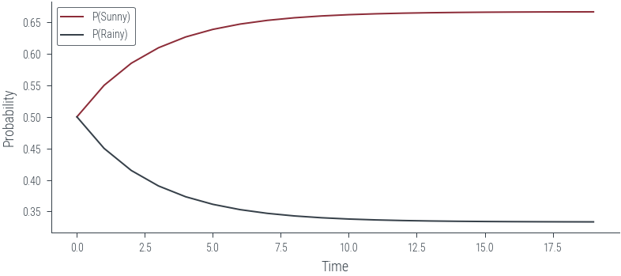
Parameters
The transition matrix is the same for all time steps.
Sampling from an unnormalized distribution
Setting Up & Imports
Setting Up & Imports
Train on all tasks
Vanilla Linear Regression
\(\alpha \sim \text{Normal}(0, 500)\)
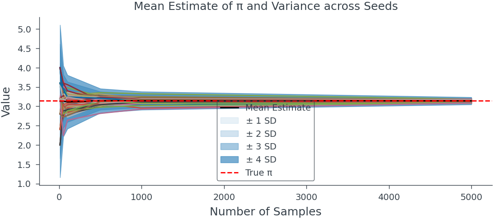
Variance in Value of Pi in MC Sampling
Sampling (Sampler.HMC; Integrator.IMPLICIT) Time spent | Time remain.| Progress | Samples | Samples/sec tensor(-1433.3967, grad_fn=
) tensor(-1.8629, grad_fn=
)…
100 rows × 100 columns
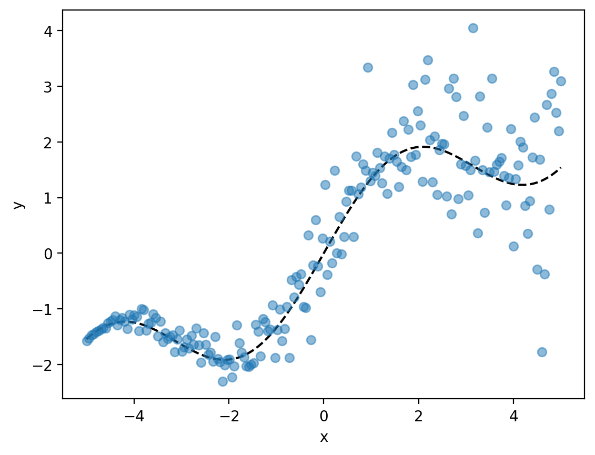
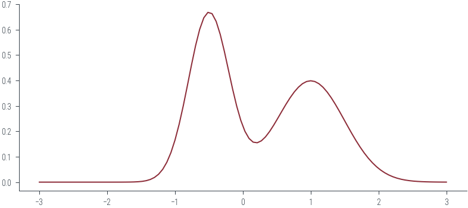
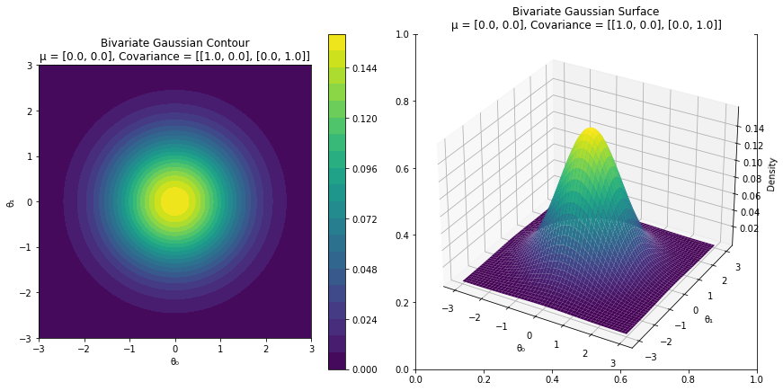
No matching items